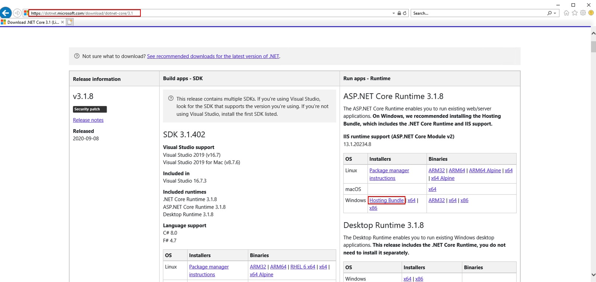
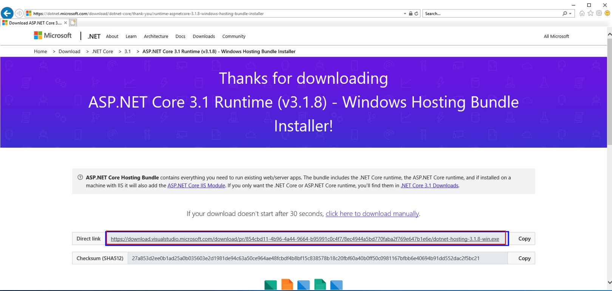

ex-4. .NET Coreのインストール
再びRDPでWindows Serverを操作していきます．
今回はBlazor ServerのアプリをIISに実行してもらう必要があるため，.NET Coreが必要となります．
IEを開き，Internet optionsを選択します．
インターネットからファイルのダウンロードを行うので，IEの設定を変更します．

File downlodのチェックボックスをEnableにします． 警告が出ますが，Yesを押して下さい．

Applyをクリックした後，OKで閉じて下さい．

IEにこちらのURLをコピペして下さい．
.NET CoreのRuntimeが案内されている画面になるので，WindowsのHosting Bundleをクリックします．

リンクをクリックして，ファイルをダウンロードします．（ファイルの保存先は任意）

ダウンロードしたdotnet-hosting-3.1.8-win.exeをダブルクリックで実行します．
同意のチェックを入れ，インストールします．完了したら閉じましょう．